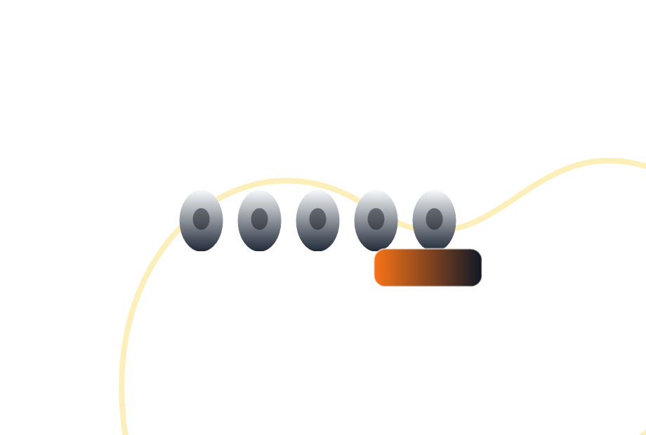

Neon Lite is the easiest entry point. Aura One is better if you want more warmth and comfort for long listening sessions.
Dixon care
Support for fit, sound, and setup.
Get help choosing tips, replacing cables, understanding tuning filters, or starting a warranty request for your Dixon IEMs.

Contact Dixon
Send a message about fit, category choice, accessories, or product support. This demo form confirms on the page.
Frequently asked questions.
Short answers to common Dixon setup questions.
Yes. Dixon IEMs use a modular 0.78 mm 2-pin cable system across the main wired lineup.
They are subtle. They adjust upper-mid and treble energy so the same IEM can feel more relaxed or more forward.
Foam tips usually isolate best. Wide-bore silicone tips can sound brighter, while narrow-bore silicone can feel warmer.